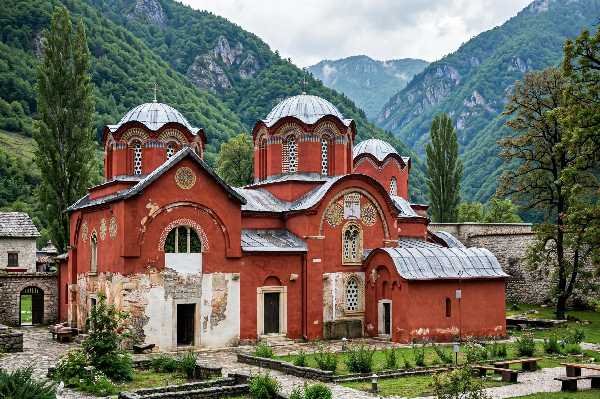

Patriarchate of Peć
| Patriarchate of Peć | |
|---|---|
| Seat | Peć (Peja), Kosovo |
| Founded | Archbishopric 1219; Patriarchate 1346–1463, 1557–1766 |
| UNESCO site | World Heritage Site (2004, as part of Medieval Monuments in Kosovo) |
The Patriarchate of Peć (Serbian: Пећка патријаршија) is a Serbian Orthodox monastery and the historic seat of the archbishops and patriarchs of the Serbian Orthodox Church. Located at the entrance of the Rugova Canyon near Peć (Peja) in western Kosovo, the complex of churches dates from the 13th and 14th centuries.

1. History
2. The complex
3. Modern history
History
The Serbian archbishopric was moved to Peć in the 13th century, following the founding of the autocephalous Serbian Church by Saint Sava in 1219. In 1346 Archbishop Joanikije II was elevated to Patriarch, and Peć remained the seat of the Serbian Patriarchate until its abolition after the Ottoman conquest in 1463. Restored in 1557 through the influence of the Ottoman grand vizier Sokollu Mehmed Pasha, whose cousin Makarije became patriarch, the patriarchate was finally abolished again in 1766.
The complex
The monastery comprises three interconnected churches — the Holy Apostles, Saint Demetrius, and the Mother of God Hodegetria — famed for their frescoes spanning the 13th to 17th centuries, and the rich treasury of icons and manuscripts.
Modern history
The Patriarchate of Peć was inscribed on UNESCO's World Heritage List in 2004 (and placed on the List of World Heritage in Danger in 2006). Serbian patriarchs are still traditionally enthroned at Peć, and the monastery remains a major pilgrimage site despite Kosovo's disputed status.
See also: Stefan Nemanja · Saint Sava · Serbia